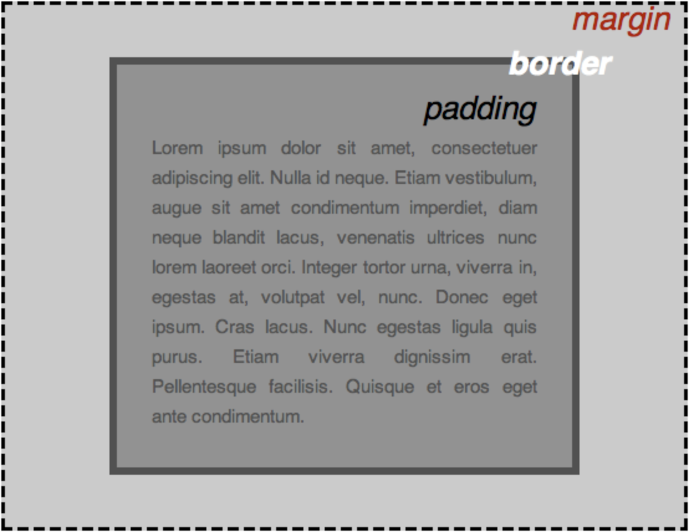

HTML (Hypertext Markup Language) jest to kod używany do tworzenia struktury strony i jej zawartości. Na przykład treść może być uporządkowana w obrębie zestawu akapitów, listy punktowanych punktów lub tabel obrazów i danych. Jak sugeruje tytuł, ten artykuł daje podstawy do zrozumienia HTML i jego funkcji.
Tak działa punktowanie w HTML'u:
To jest przykładowy link do strony zewnętrznej MÓJ GITHUB
Tu tekst jest czerwony z pomocą CSS
Tu jest tekst z cieniem w CSS
Tak wyglądają marginesy:
A tak to wygląda w praktyce:
margines (ogólnie) – przestrzeń pomiędzy główną zawartością
(np. grafiką lub fotografią), a
brzegiem danej powierzchni (np. kartki papieru, płótna)
Tutaj korzystam z javascript.
Tekst 1